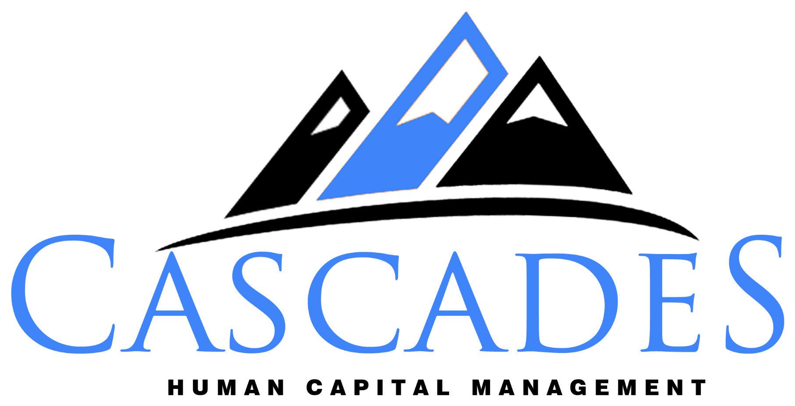

The People Infrastructure Gap
25 executive checkpoints for organizations scaling without strategic HR leadership
Has your people infrastructure kept pace with your business?

The People Infrastructure GapGrowth exposes what was never designed.
Most organizations build their people infrastructure one urgent need at a time. It works until the company outgrows it, and the cost shows up as slower decisions, avoidable turnover, and a CEO pulled back into problems that should be solved two levels down.
This checklist is designed for CEOs, founders, presidents, and COOs of organizations with roughly 50 to 500 employees. It takes about 15 minutes. It is not a compliance audit. It is a structured way to see where your people infrastructure may be constraining growth, adding risk, or creating cost you don't need to carry.
Rate each of the 25 checkpoints honestly. If you're unsure, it is probably not established.
Weigh each gap by business impact, risk, and urgency, not by how many you have.
Choose your three most consequential gaps and the next action for each.
Response options
Five areas · five checkpoints each
Your profile by area
Count your responses in each area. On screen, this fills in automatically.
| Area | Established | Needs improvement | Not in place |
|---|---|---|---|
| Total |
From gaps to strategic priorities
Not every gap deserves attention this quarter. Rank each one on three factors, then choose the three most consequential.
High impact or high risk, and the window is closing. Typically "not in place" items in areas 1 and 3.
Meaningful impact, but stable for now. Build the plan and owner before it becomes urgent.
Low impact and low risk today. Revisit at your next planning cycle or growth milestone.
Transformation priority matrix · your three most consequential gaps
| # | Identified gap | Business impact | Priority level | Recommended next action |
|---|
From assessment to sustainable performance
The Ascend Framework™ is the Cascades method for moving an organization from where it is to where its strategy needs it to be, in a sequence the organization can absorb.
Base Camp
Assess. Establish an evidence-based view of the gap between the strategy and the organization today.
This checklist is your first read at Base Camp.
The Ascent
Build. Put the foundations in place: leadership accountability, structure, processes, and systems.
Where most Priority 1 gaps are closed.
The Peak
Validate. Align leaders, roll changes out, and confirm they are working before scaling further.
Where transformation becomes adoption.
Sustainable Summit
Sustain. Measure, adjust, and transfer capability so performance holds without outside support.
Where infrastructure keeps pace on its own.
Your next stage of growth requires more than HR administration.
Cascades partners with growing and transforming organizations to provide the strategic HR leadership, operational infrastructure, and organizational expertise required to navigate complexity and support sustainable growth.
Bring this checklist to the conversation. calendly.com/kimberly_lenoir/strategy-chat · admin@cascadeshcm.com · cascadeshcm.com
This checklist is a general management guide. It is not legal advice and does not replace a review of your obligations by qualified counsel. © 2026 Cascades Human Capital Management LLC. Ascend Framework is a trademark of Cascades Human Capital Management LLC.